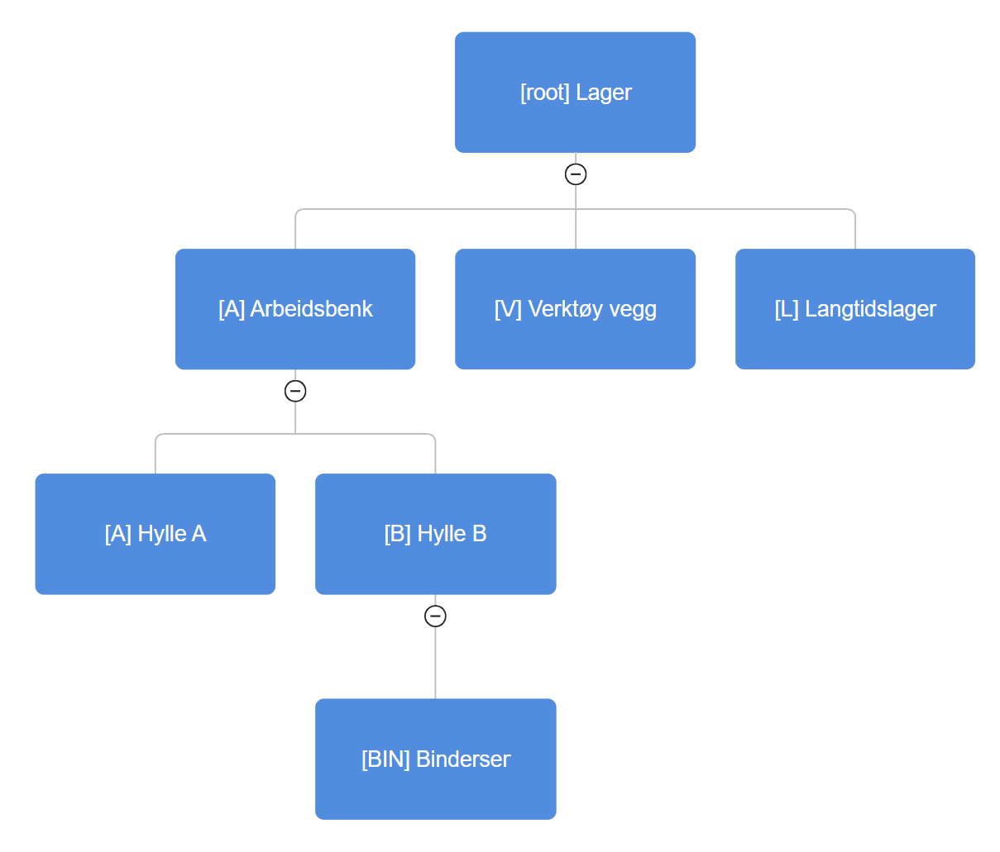
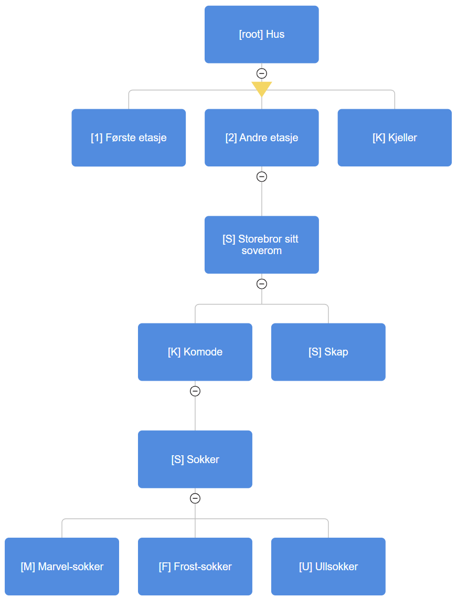

01
Treet
I Skapersøk er alt organisert i et hierarkisk tre av "Crates". Hver boks i treet representerer en crate.

Enkelt inventar + søk for skapere
ÅPEN KILDEKODE
Skapersøk er et system for inventarhåndtering og søk, laget for skapere, butikker, skoler og verksteder. Appen er utviklet med fokus på enkel bruk, samtidig som systemet er fleksibelt og kraftig.
Skapersøk er helt gratis å bruke 🎉, både for private og offentlige brukere.
Vi tilbyr
også
profesjonell
betalt hjelp med oppsettning og tilpasning av systemet for organisasjoner.
Kontakt:
trym@bringsrud.com
Skapersøk er åpen kildekode. Utforsk GitHub-repositoriene våre!
SYSTEMGUIDE
01
I Skapersøk er alt organisert i et hierarkisk tre av "Crates". Hver boks i treet representerer en crate.

02
Alt i Skapersøk er en "Crate". En crate kan være noe fysisk, som en hylle, etasje, rom eller en boks med knapper. Men det må ikke være fysisk; du kan for eksempel organisere klær etter type.

03
Hver crate har en egen plasseringskode som består av koden til craten og alle overordnede crates. For eksempel vil plasseringskoden bindersen på bilde være A-B-BIN. Kodene gjør det lett å forstå hvor noe er, bare ved å lese koden.